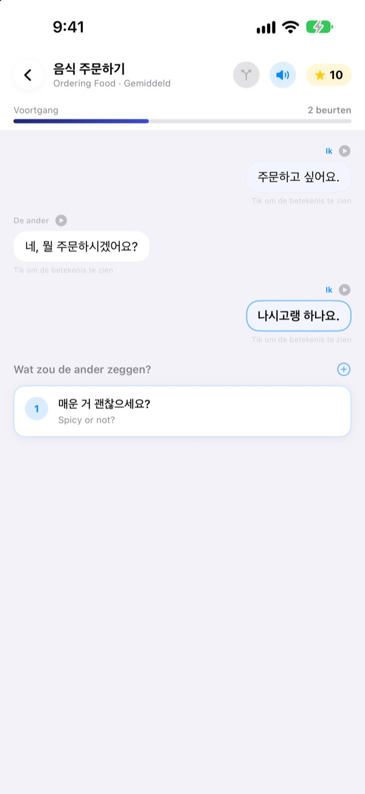
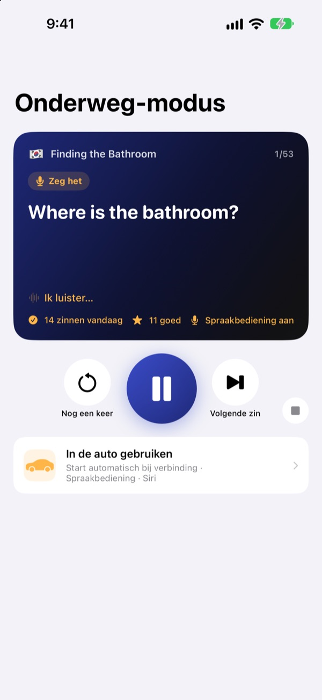
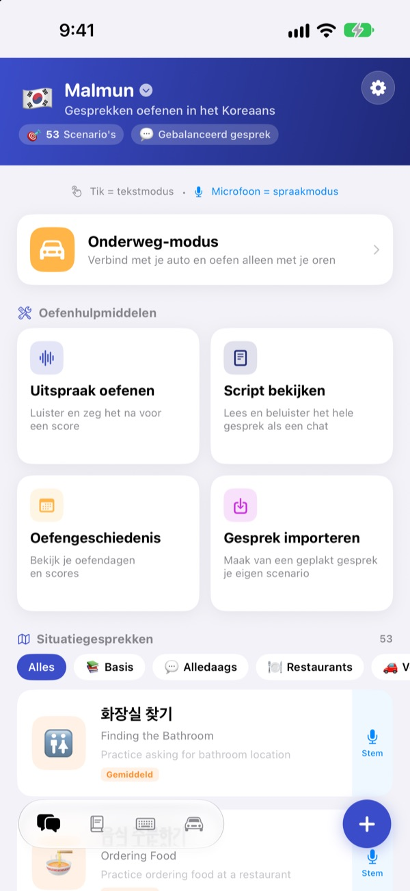
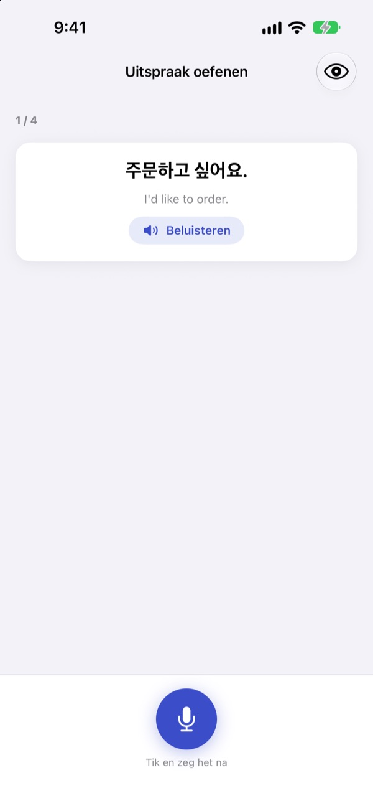

Niet meer dichtklappen.
Begin zelf.
Malmun is een gesprekstrainer waarin elk antwoord dat je kiest het gesprek een andere kant op stuurt. Leer Koreaans, Japans, Chinees, Spaans of Indonesisch, en oefen in de auto alleen met je oren en je stem.
Vertakte gesprekken, uitspraak oefenen en woordenschat zijn gratis.

Zet het gesprek zelf voort
Dit is ‘Goedemorgen’, een Indonesisch gesprek zoals het in de app staat. Met elke zin die je kiest, gaat het gesprek een andere kant op.
Zin uit je hoofd geleerd, en dan geen antwoord?
In het lesboek lopen gesprekken altijd volgens plan. In het echt zegt de ander iets wat je niet zag aankomen. Met Malmun loop je vooraf alle vertakkingen van een gesprek door, zodat je de volgende zin klaar hebt, wat er ook komt. Zelfs de rit naar huis wordt oefentijd.
Oefen op gehoor terwijl je rijdt
Onderweg-modus speelt via Bluetooth of CarPlay door de speakers van je auto. Eerst hoor je de betekenis, na een piepje heb je tijd om het zelf te zeggen, daarna hoor je het antwoord één keer langzaam en één keer op normaal tempo.
Ga verder en herhaal met de knoppen op het stuur, of zeg next, again of slower als je aan de beurt bent. Bij aanwijzingen van de navigatie pauzeert het even.

Alle situaties voor reis en dagelijks leven
Elke taal heeft 53 situatiegesprekken: basis, dagelijkse praat, restaurant, vervoer, luchthaven, hotel, winkelen, bezienswaardigheden en noodgevallen.
Leer je Indonesisch, dan is er meer: 5 zelfgeschreven smalltalkgesprekken, 3 dagcursussen van 6 scènes met weekrooster en 100 woorden voor een zakenreis.

Check of je het goed zei
Uitspraak oefenen geeft je een score en kleurt de woorden die goed gingen en die je miste.
In de scriptweergave zie je het hele gesprek als een chat. Luister het in één keer af of verberg de betekenissen om jezelf te testen.

In drie stappen aan de slag
- 1
Kies een taal
Tik op de vlag bovenaan het beginscherm. Zinnen en woorden worden per taal apart bewaard.
- 2
Open een gesprek
Tik antwoorden aan in tekstmodus, of tik op de microfoon en praat: spraakmodus vindt het antwoord dat er het dichtst bij zit.
- 3
In de auto: Onderweg-modus
Verbind je iPhone met de auto en druk op afspelen. Naar het scherm kijken hoeft niet.
Onderweg-modus bedienen
- Stuur: volgend nummer
- Volgende zin
- Stuur: vorig nummer
- Dezelfde zin nog een keer
- Afspeelknop
- Pauzeren en verder
next·skip- Volgende zin
again·repeat- Opnieuw horen
slower·faster- Voorleestempo aanpassen
next scene- Naar het volgende gesprek
stop·pause- Stoppen met oefenen
- Siri: ‘Start onderweg oefenen in Malmun’
- Beginnen zonder je iPhone aan te raken
Staat de app in het Nederlands, dan spreek je de commando’s in het Engels uit. Ze worden alleen gehoord als je na het piepje aan de beurt bent. De huidige zin staat in de afspeelinformatie van de auto. Er is geen apart app-scherm in CarPlay.
Bijna alles is gratis. Malmun Pro opent de rest.
Gratis
- Vertakte smalltalk en dagcursussen (Indonesisch)
- Situatiegesprekken: basis en dagelijkse praat
- Onderweg-modus, 3 scènes per dag
- Uitspraak, script, gesprekken importeren, oefengeschiedenis
- Mijn zinnen, woordkaarten, zinnentoetsenbord
- Scenario’s delen met vrienden, scenario’s maken met AI
Malmun Pro
- Alle situatiegesprekken: restaurant, vervoer, luchthaven, hotel, winkelen, bezienswaardigheden, noodgevallen
- Onderweg-modus zonder limiet
- Geldt voor alle talen
Jaarabonnement of eenmalige aankoop voor altijd
Prijzen vind je in de app en in de App Store. Het jaarabonnement wordt automatisch verlengd, tenzij je het uiterlijk 24 uur voor het einde van de periode opzegt.
Veelgestelde vragen
Welke talen kan ik leren?
Koreaans, Japans, Chinees, Spaans en Indonesisch. De knoppen en menu’s zijn in het Nederlands, maar de betekenissen van de zinnen en de spraakcommando’s zijn in het Engels. Daarom staat Engels zelf niet in de lijst.
Hoe gebruik ik het in de auto?
Verbind je iPhone via Bluetooth of CarPlay met de auto, open Onderweg-modus en druk op afspelen. Het geluid komt uit de speakers en de huidige zin staat bij Huidige weergave. Je kunt ook tegen Siri zeggen ‘Start onderweg oefenen in Malmun’, of eenmalig in de Opdrachten-app een automatisering maken die start zodra CarPlay (of de Bluetooth van je auto) verbindt.
Luistert de microfoon de hele tijd mee?
Nee. Alleen als je na het piepje aan de beurt bent, via de microfoon van je iPhone, en wat hij hoort wordt op je apparaat verwerkt.
Mijn uitspraak wordt niet herkend.
Spraakherkenning werkt in de taal die je leert. Probeer het op een rustigere plek en controleer of spraakherkenning voor die taal op je apparaat is gedownload.
Hoe voeg ik het toetsenbord toe?
Ga naar Instellingen ▸ Algemeen ▸ Toetsenbord ▸ Toetsenborden ▸ Voeg nieuw toetsenbord toe en kies het Malmun-toetsenbord. Tik tijdens het typen op de wereldbol om te wisselen. Volledige toegang is niet nodig. Minder zinnen tonen? Tik rechtsonder op het beginscherm op het toetsenbordsymbool ▸ Toetsenbord beheren.
Ik zie een scenario niet dat een vriend heeft gedeeld.
Delen loopt via iCloud, dus jullie moeten allebei bij iCloud ingelogd zijn. Verschijnt het nog steeds niet, sluit de app dan helemaal af en open hem opnieuw.
Wat heb ik nodig om scenario’s met AI te maken?
Vul je eigen Anthropic-API-sleutel in de app in en typ een onderwerp, dan wordt er een nieuw gesprek gemaakt. Al het andere werkt ook zonder sleutel.
Hoe zeg ik op of krijg ik mijn geld terug?
Betalingen lopen via Apple. Opzeggen doe je op je iPhone via Instellingen ▸ Apple Account ▸ Abonnementen ▸ Malmun. Geld terugvragen doe je bij Apple via reportaproblem.apple.com.
Nieuwe iPhone en Pro is weg.
Log in met hetzelfde Apple Account en tik in Malmun op Instellingen ▸ Malmun Pro ▸ Aankopen herstellen.
Waar wordt mijn voortgang bewaard?
Je hebt geen account nodig. Je gegevens blijven op je apparaat en in je eigen iCloud. Geen advertenties en geen tracking, alleen anonieme gebruiksstatistieken en foutrapporten. Bugs en wensen zijn ook welkom op GitHub Issues (github.com/M1zz/IndonesianSmallTalk/issues).
Vragen of feedback? Mail naar leeo@kakao.com, gebruik Instellingen ▸ Feedback sturen in de app of stuur een bericht op Instagram: @lee25_ios.